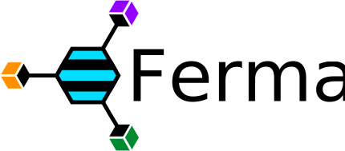

Ferma

An ORM / OGM for the TinkerPop graph stack.
Licensed under the Apache Software License v2
The Ferma project was originally created as an alternative to the TinkerPop2 Frames project. Which at the time lacked features needed by the community, and its performance was cripplingly slow. Today Ferma is a robust framework that takes on a role similar to an Object-relational Model (ORM) library for traditional databases. Ferma is often referred to as a Object-graph Model (OGM) library, and maps Java objects to elements in a graph such as a Vertex or an Edges. In short it allows a schema to be defined using java interfaces and classes which provides a level of abstraction for interacting with the underlying graph.
Ferma 3.x Supports TinkerPop3. For tinkerPop2 support use Ferma version 2.x.
Annotated classes in Ferma have their abstract methods implemented using code generation during start-up with Byte Buddy, avoiding the need for proxy classes. This in turn significantly improves performance when compared with TinkerPop Frames and other frameworks. Ferma offers many features including several annotation types to reduce the need for boilerplate code as well as handling Java typing transparently. This ensures whatever the type of the object is when you persist it to the graph the same Java type will be used when instantiating a class off of the graph.
Ferma is designed to easily replace TinkerPop Frames in existing code, as such, the annotations provided by Ferma are a super-set of those provided by TinkerPop Frames.
Ferma is built directly on top of TinkerPop and allows access to all of the internals. This ensures all the TinkerPop features are available to the end-user. The TinkerPop stack provides several tools which can be used to work with the Ferma engine.
- Gremlin, a database agnostic query language for Graph Databases.
- Gremlin Server, a server that provides an interface for executing Gremlin on remote machines.
- a data-flow framework for splitting, merging, filtering, and transforming of data
- Graph Computer, a framework for running algorithms against a Graph Database.
- Support for both OLTP and OLAP engines.
- TinkerGraph a Graph Database and the reference implementation for TinkerPop.
- Native Gephi integration for visualizing graphs.
- Interfaces for most major Graph Compute Engines including Hadoop M/R. Spark, and Giraph.
Ferma also supports any of the many databases compatible with TinkerPop including the following.
- Titan
- Neo4j
- OrientDB
- MongoDB
- Oracle NoSQL
- TinkerGraph
Ferma Javadocs: latest - 3.1.0 - 3.0.3 - 3.0.2 - 3.0.1 - 3.0.0 - 2.4.0 - 2.3.0 - 2.2.2 - 2.2.1 - 2.2.0 - 2.1.0 - 2.0.6 - 2.0.5 - 2.0.4 - 2.0.3 - 2.0.2 - 2.0.1 - 2.0.0
For support please use Gitter or the official Ferma mailing list.
Please file bugs and feature requests on Github.
Obtaining the Source#
The official source repository for Ferma is located in the Syncleus Github repository and can be cloned using the following command.
git clone https://github.com/Syncleus/Ferma.git